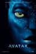
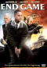
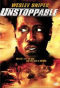

- Avatar
- End Game
- Twilight
- Unstoppable
- Priest

Avatar is a 2009 American[6][7] epic science fiction film written and directed by
James Cameron, and starring Sam Worthington, Zoe Saldana, Stephen Lang, Michelle
Rodriguez, Joel David Moore, Giovanni Ribisi and Sigourney Weaver. The film is set
in the mid-22nd century, when humans are mining a precious mineral called unobtanium
on Pandora , a lush habitable moon of a gas giant in the Alpha Centauri star system.
The expansion of the mining colony threatens the continued existence of a local
tribe of Na'vi—a humanoid species indigenous to Pandora. The film's title refers
to the genetically engineered Na'vi-human hybrid bodies used by a team of researchers
to interact with the natives of Pandora.

End Game is a 2006 action/thriller film, written and directed by Andy Cheng. The
film stars Cuba Gooding, Jr. as Secret Service agent Alex Thomas, who is shot in
the hand, while unsuccessfully trying to protect the President (played by Jack Scalia)
from an assassin's bullet. Later, with the help of a persistent newspaper reporter
named Kate Crawford (played by Angie Harmon), he uncovers a vast conspiracy behind
what initially appeared to be a lone gunman. James Woods, Burt Reynolds, and Anne
Archer co–star in this film that was originally set to be shown in cinemas by MGM
in 2005, but was delayed by the takeover from Sony and eventually sent direct to
DVD.
The project was in development for approximately three years at Paramount Pictures,
during which time a screen adaptation that differed significantly from the novel
was written. Summit Entertainment acquired the rights to the novel after three years
of the project's stagnant development. Melissa Rosenberg wrote a new adaptation
of the novel shortly before the 2007–2008 Writers Guild of America strike and sought
to be faithful to the novel's storyline. Principal photography took 44 days, and
completed on May 2, 2008; the film was primarily shot in Oregon

Meanwhile, in a rail yard within the northern town of Fuller, two AWVR hostlers,
Dewey (Ethan Suplee) and Gilleece (T.J. Miller), are ordered by Fuller operations
dispatcher Bunny (Kevin Chapman) to move a freight train led by locomotive #777
(nicknamed "Triple Seven") off its current track to clear the track for an excursion
train carrying schoolchildren. Dewey attempts to take shortcuts, instructing Gilleece
to leave the hoses for the air brakes disconnected for the short trip. Dewey later
leaves the moving cab to throw a misaligned rail switch along the train's path,
but is unable to climb back on, as the train's throttle jumps from idle, to full
power. He is forced to report the train as a "coaster" to Fuller yardmaster Connie
Hooper (Rosario Dawson)...
Priest is a 2011 American post-apocalyptic sci-fi western and supernatural action
film starring Paul Bettany as the title character. The film, directed by Scott Stewart,
is based on the Korean comic of the same name. In an alternate world, humanity and
vampires have warred for centuries. After the last Vampire War, the veteran Warrior
Priest (Bettany) lives in obscurity with other humans inside one of the Church's
walled cities. When the Priest's niece (Lily Collins) is kidnapped by vampires,
the Priest breaks his vows to hunt them down. He is accompanied by the niece's boyfriend
(Cam Gigandet), who is a wasteland sheriff, and a former Warrior Priestess (Maggie
Q).